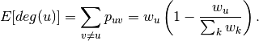

expected_degree_graph¶
- expected_degree_graph(w, seed=None, selfloops=True)[source]¶
Return a random graph with given expected degrees.
Given a sequence of expected degrees
 )
of length
)
of length  this algorithm assigns an edge between node
this algorithm assigns an edge between node  and
node
and
node  with probability
with probability
Parameters : w : list
The list of expected degrees.
selfloops: bool (default=True) :
Set to False to remove the possibility of self-loop edges.
seed : hashable object, optional
The seed for the random number generator.
Returns : Graph :
Notes
The nodes have integer labels corresponding to index of expected degrees input sequence.
The complexity of this algorithm is
 where is the
number of nodes and
where is the
number of nodes and  is the expected number of edges.
is the expected number of edges.The model in [R258] includes the possibility of self-loop edges. Set selfloops=False to produce a graph without self loops.
For finite graphs this model doesn’t produce exactly the given expected degree sequence. Instead the expected degrees are as follows.
For the case without self loops (selfloops=False),

NetworkX uses the standard convention that a self-loop edge counts 2 in the degree of a node, so with self loops (selfloops=True),
![E[deg(u)] = \sum_{v \ne u} p_{uv} + 2 p_{uu}
= w_u \left( 1 + \frac{w_u}{\sum_k w_k} \right) .](../../_images/math/62c5e29d0b86629855a6f880ca3f11051e988cc2.png)
References
[R258] (1, 2) Fan Chung and L. Lu, Connected components in random graphs with given expected degree sequences, Ann. Combinatorics, 6, pp. 125-145, 2002. [R259] Joel Miller and Aric Hagberg, Efficient generation of networks with given expected degrees, in Algorithms and Models for the Web-Graph (WAW 2011), Alan Frieze, Paul Horn, and Paweł Prałat (Eds), LNCS 6732, pp. 115-126, 2011. Examples
>>> z=[10 for i in range(100)] >>> G=nx.expected_degree_graph(z)